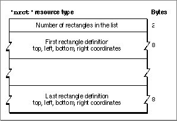

Legacy Document
Important: The information in this document is obsolete and should not be used for new development.
Important: The information in this document is obsolete and should not be used for new development.


The Rectangle Positions Resource
Your control panel can consist of one or more rectangles. To define a list of rectangles that determine the display area for your control panel, create a rectangle positions resource of type'nrct'. A rectangle positions resource must have a resource ID
of -4064. Figure 8-17 shows the structure of a compiled rectangle positions resource.Figure 8-17 Structure of a compiled rectangle positions (
'nrct') resource A compiled version of a rectangle positions resource contains these elements:
To provide for backward compatibility with the Control Panel desk accessory, the Finder accepts only the coordinates (-1,87) as the origin of a control panel. If you are designing for System 7 only, you can extend the bottom and right edges of a control panel as far as you like. If you want your control panel to run in System 7 and previous versions of system software, you must limit your control panel's size to the area bounded by
- Number of rectangles in the list.
- Coordinates for each rectangle. You specify the coordinates as top, left, bottom, and right.
(-1,87,255,322). These are the coordinates used by the Control Panel desk accessory.In System 6, the Control Panel desk accessory draws a frame that is 2 pixels wide around each rectangle. To join two parts of a panel neatly, overlap their rectangles by 2 pixels on the side where they meet.
For more information about the rectangle positions resource, see "Defining the Control Panel Rectangles" beginning on page 8-15.